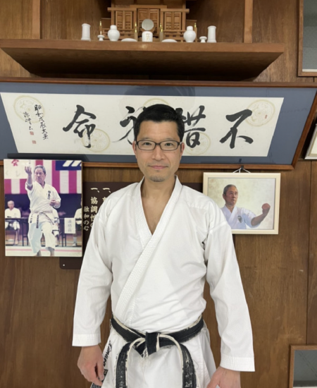

明るく元気な挨拶や返事、相手の話はしっかりと目を見て聞く、履物はしっかりと揃える。
こういった社会生活の基本である礼儀作法を指導しています。
厳しくもあり、楽しくもある、稽古や試合の中で、体力の向上ばかりではなく、
集中力や忍耐力を養い、努力することを学んでいきます。
空手道を学んでいく中で、謙虚で素直になり、
社会に貢献していく人に成長してほしいと切に思っています。
空手に興味のある方は是非、体験もしくは見学しに来てください。
お待ちしております。
Headers examples
指導員紹介

拳勝館館長 首席師範
木村 研治
全空連公認6段
全日本空手道連盟全国組手審判委員
全日本空手道連盟全国形審判委員
全日本空手道連盟3級資格審査員
日本スポーツ協会空手道コーチ４
全日本空手道連盟全国教士号取得
神奈川県空手道連盟常任理事 強化部会長
藤沢市空手道連盟副会長
支部紹介
拳勝館 本部道場
【本部道場】
〒251-0053 神奈川県藤沢市本町1丁目8-26
【電話番号】
Tel/Fax: 0466-23-6570
【その他】
藤沢駅から徒歩10分（小田急線）
WEBサイト：こちらから＞
拳勝館 川崎 二子玉川支部
【川崎・二子玉川支部】
(火)南菅生自治会館(水)二子会館
(金)犬蔵小学校 (土)二子会館
【電話番号】
Tel/Fax: 070-5086-27350
【その他】
✉︎ngnyk316@ybb.ne.jp
WEBサイト：こちらから＞
拳勝館 鎌倉 西湘 平塚支部
【鎌倉・西湘・平塚支部】
〒247-0066 鎌倉市山崎616-6
【電話番号】
Tel/Fax: 0467-46-8010
【その他】
拳勝館 座間支部
【座間支部】
(月)座間市立ひばりが丘小学校体育館
(金)相模が丘コミュニティーセンター
(土)ひばりが丘コミュニティーセンター
【電話番号】
ギョウダまで: 090-2333-4547
【その他】
WEBサイト：こちらから＞